Institutioners och organisationers roll (och problem)
En institution kan inte fungera i två logiker samtidigt
En transformation innebär att en dominerande samhällslogik dör, samtidigt som en annan växer fram. Den nya logiken är inte bara en vidareutveckling av den gamla – den bygger på helt nya förutsättningar och andra uppfattningar om vad som är sant, rätt och möjligt. När detta sker, förändras inte bara samhällets yta utan även dess underliggande struktur.
I detta mellanrum – där den gamla logiken inte längre fungerar, och den nya ännu inte helt har tagit form – ställs våra institutioner inför ett grundläggande problem.
Institutioner är nämligen inte byggda för dubbelhet. Deras uppgift är att skapa förutsägbarhet och ge människor en gemensam förståelse för vad som gäller, vilka regler som råder och hur man förväntas agera.
För att göra detta måste institutionen vila på en sammanhängande logik. Den behöver en enhetlig förståelseram, med tydliga normer, språk, roller och värderingar. När två logiker – med oförenliga synsätt – samtidigt ska bära upp en och samma institution, uppstår ett inre spänningsfält som den inte kan hantera. Vad som tidigare varit tydligt blir tvetydigt. Regler tolkas olika. Roller förlorar sin innebörd. Legitimiteten urholkas.
Det är som en vägkorsning där både högerregeln och trafikljus gäller samtidigt. Ingen vet vad som faktiskt gäller – vissa stannar, andra kör. Små osäkerheter leder till stora sammanbrott.
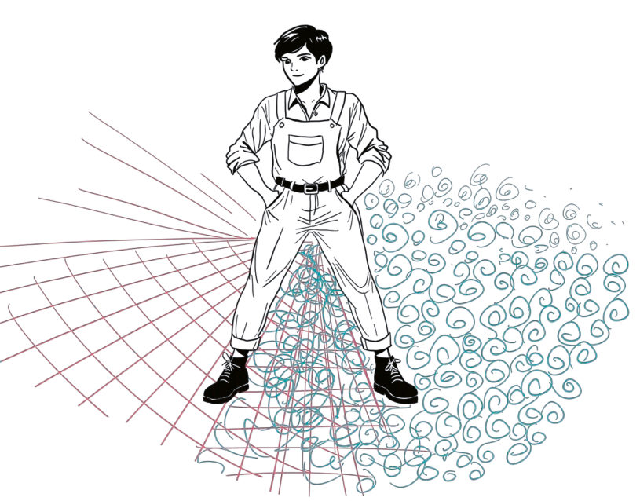
Institutionen kan hantera detta tillfälligt – genom kompromisser, dubbel kommunikation eller organisatorisk uppdelning – men det är instabilt.
Att uppehålla denna dubbelhet kostar och innebär en snabbt ökande inre komplexitet, men också yttre effekter i form av motstridiga signaler till omvärlden. I längden måste den välja vilken logik den ska tjäna och om den ska omformas i grunden eller förlora sin funktion. Det är därför en institution inte kan leva i två logiker samtidigt – inte utan att långsamt lösas upp inifrån.
Här behöver vi komma ihåg att resonemanget handlar om institutioner och inte enskilda människor. Människorna har, till skillnad mot institutionerna, förmågan att leva och växla mellan två logiker – och det är människor som genom sina val och handlingar både kommer att montera ner de gamla och bygga upp de nya institutionerna.
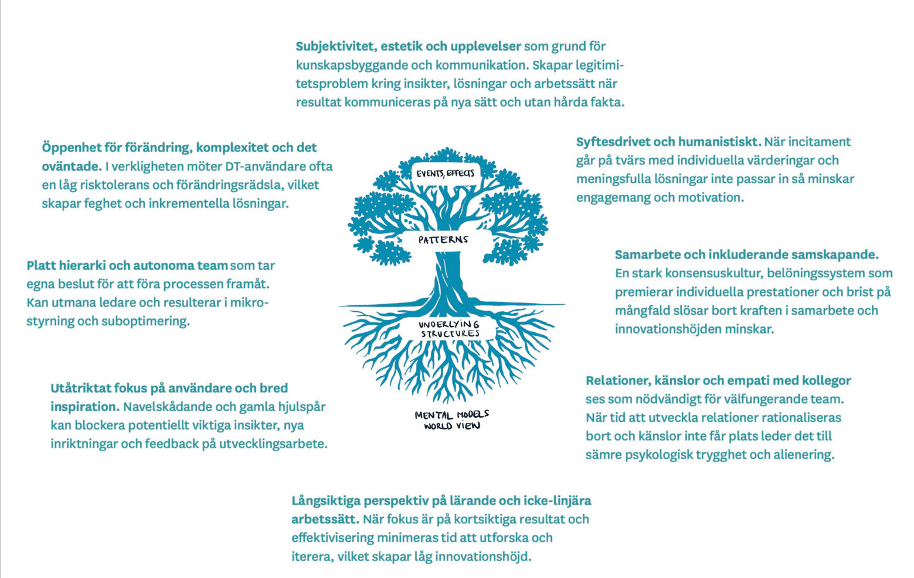
Värderingsmässig friktion som viktig signal
Transformationsinriktade eller bejakande tanke- och arbetssätt kan ha svårt att få plats i flera organisationer, och vi behöver förstå de underliggande mekanismerna. Här kan vi ta inspiration i forskning om implementering av arbetssättet design thinking (DT) i icke-designpräglade organisationer.
Bilden beskriver DT utifrån olika dimensioner av organisationskultur, samt den friktion som kan uppstå till följd av värderingskrockar när DT används i en traditionell organisation.
Det handlar om mentala modeller som kanske inte ens är uttalade, men som genomsyrar alla delar av organisationen.
När vi faciliterar transformation ser vi att vi kan behöva förhålla oss till liknande krockar. Den här boken handlar inte om DT, utan nya arbets- och förhållningssätt för att jobba med systemisk transformation. Dock är förutsättningarna liknande: vi har att hantera det som är komplext, framväxande, och osäkert – där designmetodik eller liknande ansatser passar.
Att analysera systemkontexten avseende på krockar i djupt underliggande värderingar kan vara ett sätt att förstå problem som ligger djupare och som kan behöva hanteras för att få till förändring. Hävstångspunkter ligger ofta på djupet, även om dessa då är svårare att adressera.
Ett visst mått av friktion är nödvändig för att skapa lärande och utveckling. Det är en fin balans – utveckling genom skav, men inte så mycket skav att förändringsinitiativ riskerar att stjälpas.
Hur manifesterar sig krockar?
Kungsbacka kommun har som uttalat mål att åstadkomma förnyelse och kompetensutveckling för att tackla utmaningar som klimatkris och demografisk utveckling. Vi har pratat med Karin Lycke som är innovationsledare på Kungsbacka kommun, och vars erfarenheter speglar just den spänning vi lyft:
- Kommunen behöver hantera två uppdrag samtidigt: de måste både förvalta det befintliga systemet och samtidigt förnya sig – något Karin beskriver som att arbeta “tvåhänt”. Detta skapar slitningar i både struktur och kultur.
- _Ledning och styrning hänger inte alltid med: s_tyrsystemen är byggda för stabilitet och kontroll – inte för förnyelse och experiment. Det gör att de beteenden som behövs för innovation, inte alltid uppmuntras.
- Svårigheter att hantera ovisshet och komplexitet: ökad komplexitet och det faktum att att lokala beslut påverkas av globala händelser skapar ovisshet, något som är svårt att hantera i en traditionellt trygghetsstyrd organisation.
- Mänskliga reaktioner på förändring: Den här ovissheten gör att medarbetare söker sig tillbaka till “det gamla” där det känns tryggt, vilket kan visa sig som passivitet eller att man isolerar sig i sin egen bubbla.
”Människor söker trygghet i förändring – ibland räcker det att bekräfta: ja, vi är klämda mellan två system.”
Karin Lycke, Kungsbacka kommun
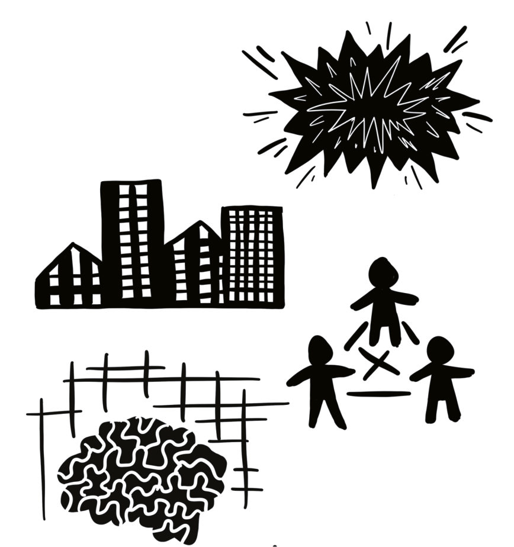
Många känner sig alltmer pressade i vardagens måsten. En att-göra-lista som aldrig verkar ta slut, och i flera organisationer växande arbetsuppgifter genom förpappring och krav på dokumentation. I ett paradigm av ständig tillväxt kan vinstkraven kontinuerligt öka. Har man fått medarbetare att leverera ett svåruppnåeligt mål så piskar man vidare, eftersom man såg att det var möjligt första gången. De som sätter kraven ser inte alltid vad det gör med maskinen eller draghästen, hur det påverkar uthållighet över tid eller förmåga till förnyelse.
Vad är alternativkostnaden när medarbetare pressas? De tidiga ”följare” som är så viktiga att få med sig när man vill skapa en rörelse, kan få svårt att haka på om de sitter fast i för mycket jobb och i förutsättningar som hindrar dem att göra annorlunda.
Svårigheten att hitta utrymme för utforskande aktiviteter har likheter med det klassiska ambidexterity-dilemmat inom innovation – det finns sällan nog med budget, mandat och acceptans för radikal innovation. Att utforskande nedprioriteras hänger också ihop med det befintliga systemets fokus på att satsa på det som har bevisad nytta. De aktiviteter som är utforskande är inte av den karaktären att de kan ”bevisas”.
En vanlig lösning inom innovationsområdet är att skapa separata hubbar eller enheter för radikal innovation, som får jobba enligt andra regler och ostört från resten av organisationen. Problemet är att dessa enheter kan bli alltför separerade, och att deras resultat blir omöjliga att föra tillbaka till huvudorganisationen. Väljer man den lösningen så är det alltså viktigt att se över återförings- eller överföringsmekanismer – men i grunden handlar det igen om krocken mellan logiker som behöver adresseras.
Hur får man plats
för utveckling i en logik som inte
premierar utforskande?
Exempel: Kungsbacka kommun arbetar aktivt med att balansera två parallella spår: förvaltning av befintliga system och innovation för att möta framtidens behov. Kommunen erkänner att båda dessa perspektiv är nödvändiga för att hantera samtidens och framtidens utmaningar.
Genom att skapa en kultur där förändring är möjlig, samtidigt som de traditionella strukturerna får stöd, kan kommunen gradvis övergå till mer transformativa arbetssätt utan att förlora stabiliteten i de befintliga systemen.
Det här är ett hårt redigerat foto av is på en sjö där två olika strukturer möts. I smältvattnet reflekteras världen runtomkring.
Särskilda utmaningar i en politiskt styrd organisation
Systemsynsätt är svårt. Vare sig det politiska systemet eller dess förvaltningar är utformade för att utöva det i praktiken. Men det hjälper inte att skuldbelägga människorna; politikerna, tjänstepersonerna, yrkesrollerna eller ens Axel Oxenstierna.
All heder istället, till dem som vågar och orkar beskriva verkligheten som den ofta är, komplex och icke-linjär, OCH som oförtrutet bidrar med konstruktiva förslag om hur man kan hantera den annorledes. Även om det inte vinner ett val, rimmar med verksamhetslogiken och ger det bästa utfallet i uppföljningsmodellen.
- Erik Bakkman, strateg RISE (fd Polismästare NOA)
Det finns särskilda utmaningar med en politiskt styrd organisation kopplat till de här stora skiftena i samhället, utmaningar som påverkar våra möjligheter att göra det som verkligen behövs. Om du har ett eget företag kan du driva det helt och hållet baserat på hur du ser på att leda i transformation, förstås så länge folk betalar för dina varor eller tjänster.
Men en politiskt styrd organisation har politiska beslut som grund. Om varken våra politiska företrädare i regeringen eller tjänstepersoner inom regeringskansli och departement förstår att organisationens arbetet också handlar om att navigera i en systemtransformation (och vad det innebär), är utmaningarna på gränsen till oöverstigliga. Det är på samma sätt som med innovationsledning: om inte högsta ledningen förstår att innovationer behöver omsättas i en förändrad organisation, nya arbetssätt och kanske nya affärsmodeller, så spelar det ingen roll vad det står i en innovationsstrategi.
Det största motståndet kan finnas hos dem som bestämmer mest om sånt de inte förstår. Eller så förstår de alldeles utmärkt, men de förstår också att de inte kan vinna val på att utmana den rådande situationen.
Det är här man också kan uppleva den stora krocken mellan olika paradigm. Vi förstår att alla de här faktorerna som karaktäriserar vår verksamhet motverkar transformation. Men vi har svårt att frigöra oss, eller vi väljer att inte göra det.
Vad innebär utvecklingen för institutioner?
Framtidstrategen Bill Sharpe har beskrivit hur såväl graden av osäkerhet och komplexitet, som en organisations handlingsförmåga - styr sättet man förhåller sig till och skapar strategier för framtiden. Resonemanget påminner om Cynefin framework som vi presenterade i kapitel 3.
Sharpes teori om ”Three Horizons” hjälper oss att tänka bortom fasta färdplaner. Istället för att se framtiden som förutsägbar och styrbar genom analys och strategi, visar modellen hur olika logiker samexisterar över tid – där det gamla tappar kraft, det nya växer fram och övergången präglas av osäkerhet och spänningar. I en komplex värld blir alternativa framtidsbilder, experiment och gemensamt utforskande viktigare än kontroll och tydliga planer.
Reflexiva framtider är när både faktorerna osäkerhet och komplexitet är stora. Då kan vi varken enbart följa en karta eller förlita oss på scenarioanalys. Vi måste aktivt trampa upp stigen medan vi går. Framtiden uppstår i samspelet mellan våra beslut och de förutsättningar som successivt växer fram.
Institutioner och organisationer som formats för en förutsägbar värld ställs här inför en existentiell utmaning. De kan inte längre fungera som statiska strukturer utan måste bli ”organiseringar” snarare än organisationer – processer snarare än fasta former.
Reflexiva framtider kräver att vi rör oss bort från kontroll och fasta regler – och istället lär oss längs vägen, delar ansvar och fattar beslut utifrån principer snarare än detaljer.
Det betyder att organisationer behöver bli mer som levande system som ständigt utvecklas, snarare än något som är färdigt och fast.
Organisationer kan inte längre designas uppifrån och implementeras linjärt – de måste växa fram genom interaktion, anpassning och öppenhet för det oväntade. De som inte omfamnar denna förändring riskerar att bli irrelevanta i en värld där framtiden inte kan förutsägas, utan bara formas genom aktivt deltagande.
Hög
Låg
FÄRDPLANER
planerade evolutionära hopp framåt
PLANER OCH ÖVERSIKTER
Extrapolera från analys
REFLEXIVAFRAMTIDER
framväxande stigar att trampa upp
SCENARIER
Flera möjliga framtider
Osäkerhet/komplexitet
Hög
Illustration: Peter Ljungstrand
Satsa på att utveckla framtidens (nutidens) nyckelkompetenser
Under lång tid har vi människor fokuserat på vad vi behöver lära och inte så mycket på hur vi gör det, eller hur vi sen bäst arbetar och lever utifrån våra kompetenser. Mycket pekar nu mot att det är just sådana kompetenser, de om hur:en och själva processerna, som blir helt avgörande.
Kritiskt tänkande och problemlösning är centralt för att hantera desinformation, fatta välgrundade beslut och lösa problem på innovativa sätt. Anpassningsförmåga och flexibilitet behövs i en tid där arbetsmarknaden, yrkesroller och samhällsstrukturer omformas snabbare än någonsin. Digital kompetens och teknologisk förståelse är naturligtvis viktigt i en värld där AI, automatisering och dataflöden förändrar spelplanen i alla sektorer.
Men det finns även annat som rustar oss i en tid av stark förändring. Emotionell intelligens och sociala färdigheter blir avgörande för att skapa hållbara relationer och förstå både egna och andras drivkrafter.
Livslångt, kontinuerligt och aktivt lärande blir en nödvändighet snarare än ett val, då kunskap snabbt föråldras och förmågan att kontinuerligt omvärdera och uppdatera sin förståelse är nödvändig. Processen lärande blir viktigare än någonsin, trots att vi är tränade på att mer tänka på och mäta kunskap som resultat.
Ett ledarskap för transformation blir också avgörande, inte bara i formella roller utan i förmågan att inspirera, organisera och driva förändringen och allt lärande.
Facilitering av såväl lärande som komplexa processer och skeenden måste finnas på plats.
Kreativitet och innovationsförmåga blir kritiska resurser för att möta nya utmaningar och skapa hållbara lösningar för såväl samhällsutveckling som för välmående.
Samarbete och tvärdisciplinär samverkan är mer än någonsin avgörande för att hantera komplexa problem som ingen kan lösa ensam.
Dessa kompetenser utgör tillsammans grunden för en motståndskraftig, handlingskraftig och sammanlänkad samhällsstruktur – en struktur som kan navigera osäkerhet, hantera systemiska utmaningar och forma en hållbar framtid. Men framför allt rustar det oss som människor och individer och ger oss en process att hålla oss i, när allt annat känns osäkert och föränderligt.
Tips till dig som navigerar det mellanmänskliga
Polymorft ledarskap – att leda i förändringens logik
Hur förhåller vi oss till en värld och organisationslogik i förändring?
Hur kan vi förstå ledarskap i en tid där organisationer ständigt förändras? I en värld som präglas av individualisering, digitalisering och ökade krav på flexibilitet räcker det inte längre att tänka i fasta roller och hierarkier. Istället behöver vi ledarskap som kan anpassas efter situationen – ett polymorft ledarskap.
Polymorft ledarskap innebär att roller, ansvar och strukturer i en organisation förändras utifrån vad som behövs i stunden. Det handlar om att organisationer – och människorna i dem – kan växla roller och funktioner beroende på sammanhang. Det kräver förmågan att byta perspektiv, ta nya positioner och ibland kliva fram, ibland kliva tillbaka.
Istället för att tänka att ledarskap alltid utgår från en chefspost eller en titel, behöver vi se hur ledarskap ofta uppstår i relationer och genom engagemang. Det är den som har överblick, energi eller förtroende som kan ta ledningen – och det skiftar över tid.
Men det här sättet att tänka kan bli problematiskt i en traditionellt toppstyrd organisation. Där ses tydliga beslutsvägar som avgörande för ordning och ansvar, och att någon tillfälligt kliver fram utan formellt mandat kan uppfattas som ett hot eller som otydlighet. Det finns risk att initiativ kvävs, eller att organisationen bromsar sig själv trots att rätt lösning redan fanns – bara inte från rätt nivå i hierarkin.
Polymorft ledarskap kräver alltså både en ny syn på ansvar och ett större utrymme för människor att växa i olika riktningar. Det är ett ledarskap som följer förändringens logik – inte tvärtom.
”Transformation handlar om förändringsledning, kultur, struktur och förmåga att ställa om.”
Lisa Olsson, Helsingborgs stad
Helsingborgs stad har infört lokala innovationsportföljer för varje förvaltning och bolag, vilket ger dessa direkt ansvar för omställningsarbetet och främjar ett decentraliserat förhållningssätt. De här portföljerna används för att mäta hur olika initiativ bidrar till att lösa stadens utmaningar, samtidigt som de möjliggör att ansvar och engagemang fördelas brett i organisationen.
Helsingborg har en tro på att initiativ växer när man fördelar ansvar och engagemang. Genom att skapa ett system där varje del av organisationen har en tydlig roll i transformationen, stärker staden både förankring och effektivitet i sitt arbete.
Följande delkapitel är uppdelade i ”tips till dig som jobbar med det mellanmänskliga” och ”tips till formella ledare” – men oavsett din roll så kan det finnas matnyttig inspiration i båda. Även ledare jobbar ju med det mellanmänskliga.
Tipsen ser ändå lite annorlunda ut beroende på om man är den som driver transformation eller om man är den som har en annan slags möjlighet att påverka.
Övergångsfasen är särskilt krävande
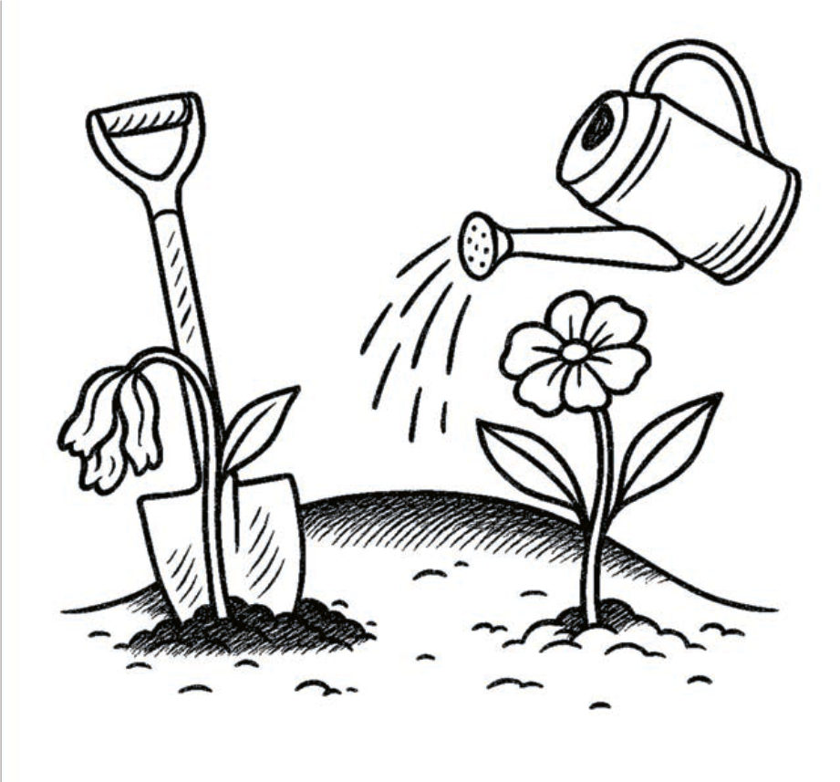
Det krävs tid och energi både för att låta det gamla dö ut, och för att låta det nya växa fram och etableras.
- Om människor redan är nära utmattning i det befintliga systemet, är det viktigt att lägga större fokus på att kontinuerligt identifiera vilka strukturer och arbetssätt som inte längre tjänar oss och som bör tas bort. Genom att minska sådant som inte längre fungerar skapas utrymme, tid och energi för att bygga upp nya strukturer och arbetssätt.
- Mod och medkänsla behövs för att erkänna varför de nuvarande strukturerna och systemen har tjänat oss tidigare, och för att tydliggöra i vilka situationer de fortfarande är användbara. Samtidigt krävs ritualer för att sörja de delar som behöver släppas så att vi kan skapa utrymme för det nya att växa fram.
- Resurser och mandat för det nya. För att nya strukturer och arbetssätt ska kunna utvecklas och prioriteras, krävs tillräckliga resurser och ett tydligt mandat. Utan dessa blir det svårt att bygga något hållbart och långsiktigt.
- Skapa tydlighet kring när det gamla respektive det nya gäller. Att praktisera inom två samexisterande paradigm kan vara förvirrande och energikrävande. Därför är det avgörande att klart kunna beskriva i vilka situationer de befintliga principerna (till exempel hierarki) ska tillämpas, och i vilka situationer de nya principerna (till exempel tvärfunktionella självorganiserade team med distribuerat ledarskap) ska gälla.
Identifiera rätt växel och ha modet att avsluta
Det finns en spänning mellan det radikala och det lama.
Klådan att vända upp och ner på saker och ting kan bli intensiv, vi vill skaka om system, få människor att lämna sin bekvämlighetszon, radikalt förändra övertygelser. Men samtidigt måste vi ibland göra det på ett sätt så att vi inte förlorar människor som vi inte har råd att förlora.
Inkrementella (gradvisa) förändringar kanske är det enda en organisation eller människor kan tolerera vid en viss tidpunkt. Att se och möta människorna som står mitt i, driver eller hindrar transformation kan vara nycklar till förändring.
Å andra sidan: Ibland är det inte läge för ”alla ska med”, och man måste kanske upp i en hastighet eller momentum för att adressera något som är av stor vikt eller som skapar blockeringar.
Att hantera såväl det långsamma och snabba, radikala och inkrementella, är en spänning och balans som både pionjärer och möjliggörande beslutsfattare måste vara medvetna om, leka med, och utnyttja. Exempelvis genom:
- Den status och prioritet som ges till utforskning och produktion.
- Omfattning och strategiska val kopplat till förändring, legitimitet och politiskt mod.
- De metoder och uttryckssätt som vi använder - till exempel design eller konstnärligt utforskande - för att nå djupa insikter och känslor.
”Ett tvåhänt ledarskap kan uppfattas som att man ska balansera olika angreppssätt i relation till varandra. En balansakt leder lätt tanken till något statiskt som skall uppnås , ett status quo mellan olika angreppsätt i att leda och organisera. Det är riktigt att det i övergången fordras förmåga att att utöva ledarskap i två olika system samtidigt. Men i transformation krävs aktivitet, kraft och handling med tonvikt på det framväxande . Det perfekt balanserade tillståndet där "alla är ombord" infinner sig inte heller i transformation. Tvärtom är ledarskapet i transformation en mycket rörlig , och rätt rörig, process.
I transformation måste ledarskapet dessutom ständigt göra upp med grundläggande antaganden om hur saker skall skötas och medvetet undanröja de incitament som står i vägen för momentum. Detta är väldigt sällan en harmonisk balansakt. Mer som tvåhänt jonglering. På rullskridskor. I utförsbacke. Utan knäskydd. "
— Erik Bakkman, strateg RISE (fd Polismästare NOA)
Gränsgångare – en speciell typ av pionjär
I transformationsprocesser där det gamla och det nya existerar sida vid sida, behövs människor som vågar röra sig mellan världar. Gränsgångaren är en sådan roll – en särskild typ av pionjär som inte bara bygger nytt, utan binder samman, översätter och håller ihop.
Begreppet gränsgångare bygger på det engelska ”boundary spanner” (Aldrich & Herker, 1977), men i sin avhandling Planering på gränsen och gränsen för planering utvecklar Heiti Ernits (2023) rollen på ett sätt som tydligt placerar den i sammanhanget systemisk transformation.
Gränsgångare verkar över organisatoriska, kunskapsmässiga och sociala gränser – ofta i komplexa, föränderliga och ibland konfliktfyllda miljöer. De förbinder annars separata domäner och fungerar som översättare, brobyggare och möjliggörare av samordning, förståelse och samarbete. Ernits tar upp begreppets historiska laddning – inspirerat av "grenzgänger" som rörde sig mellan Öst- och Västberlin – vilket förstärker bilden av den som rör sig mellan världar.
Men Ernits visar att gränsgångare inte bara verkar över gränser – de arbetar också med själva gränsdragningarna. De organiserar och formar så kallade “gränsarrangemang” – temporära strukturer och samverkansformer som gör det möjligt att hantera spänningar och bygga tillit. I praktiken kan det innebära att skapa nya mötesplatser, sätta ord på otydliga mandat, eller att stå kvar när konflikter blossar upp. Gränsgångaren balanserar mellan formella system och informella relationer, och befinner sig ofta i organisatoriska mellanrum – där mandatet är oklart, men behovet stort.
Det gör också att rollen är utsatt. Den kräver inte bara strategisk fingertoppskänsla, utan också emotionellt tålamod, uthållighet och mod. Ernits beskriver gränsgångaren som en sorts diplomat, fredsmäklare eller vävande praktikant mitt i den systemiska transformationsrörelsen (och röran).
I ett två-loops-perspektiv kan vi se gränsgångaren som en pionjär som inte enbart lämnar det gamla systemet, utan som arbetar i dess sprickor - för att skapa passager, förståelse och nya möjligheter. När det nya växer fram behövs det relationer som det kan slå rot i. Gränsgångaren bidrar till att de rötterna hittar näring, sammanhang och förankring.
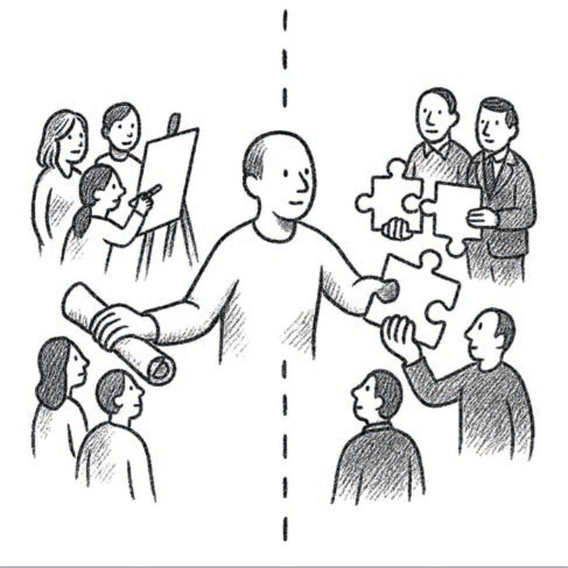
”Gränsgångarteorin ger människor ord och begrepp på rollen som de har som förändringsledare. Det skapar också en förståelse att olika gränsgångarroller behövs i olika situationer och vilken sorts ledarskap en gränsgångare behöver för att förmågan och kapaciteten ska nyttjas på allra bästa sätt. ”
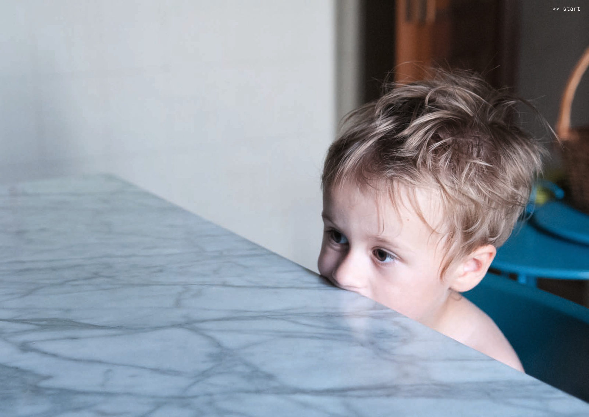
Känslan av att ge upp, dra sig in i sitt skal och gå tillbaka till business-as-usual kan ligga nära till hands. På nästkommande sidor får vi ta del av reflektioner och tips från de erfarna praktikerna Pernilla Glaser och Karin Lycke om hur man kan underlätta för medarbetare som genomlever transformation.
Illasittande roller och längtan efter verklighet
I en tid där organisationer söker tydlighet, struktur och kontroll, talar processledaren, författaren och terapeuten Pernilla Glaser för något annat: att det är just i ovissheten vi behöver lära oss att arbeta. Hon verkar i gränslandet mellan forskning, konst, civilsamhälle och ledarskap – och coachar, utbildar och stödjer människor i att navigera komplexitet och transformation.
Illasittande kläder
Pernilla Glaser sätter ord på något många känner men sällan får syn på: att vi försöker skapa förändring med verktyg som inte längre fungerar. Roller, begrepp och organisationsstrukturer har blivit som illasittande kläder – de skaver, begränsar och tvingar oss att agera på sätt som inte längre känns rätt. Vi säger fortfarande ”verksamhetsplanering” och ”output”, men ofta utan att det vi gör, faktiskt ryms i orden. En stor del av frustrationen i arbetslivet idag bottnar i den här mismatchen mellan verklighet och språk. När strukturerna inte längre stödjer den förändring vi vet att vi behöver, växer behovet av nya arenor – där vi kan tänka långsammare, känna mer och bygga nytt tillsammans.
Att uppskatta och vårda det som skaver
Pernilla beskriver hur samtidens ledare slits mellan två rörelser: det akuta behovet av snabb handling och det djupa behovet av eftertanke. Det skaver – och just där, i skavet, bor något viktigt. Pernilla talar om balansen mellan friktion och omsorg: Utan utmaning sker ingen utveckling, men utan trygghet går vi sönder. Utforskande arbete kräver båda – mod att göra annorlunda, och generositet nog att hålla varandra när det blir skört. Vi behöver också uppvärdera meningsfulla misslyckanden och träna oss i att ge betydelse åt små, till synes futtiga, men avgörande vardagshandlingar. Som stöd behöver vi bygga dialogiska strukturer – sammanhang där samtal, tolkning och gemensam reflektion får ta plats.
Omsorg som förändringskraft
Stress överförs ofta mellan oss i våra organisationer. Sekundär stress – den vi ärver från andras pressade lägen – vandrar vidare som en tyst smitta: från chef till medarbetare, mellan team, in i relationer. Genom att sätta stopp för den rörelsen och istället ge plats för vardaglig omsorg, skapas förutsättningar för verkligt lärande och långsiktig hållbarhet. Avgörande faktorer i transformation.
Pernilla påminner om vikten av att ge små, meningsfulla handlingar ett större värde. Som att ta en promenad med en kollega, våga ställa en fråga man inte har svar på, eller formulera en erfarenhet som inte riktigt går att mäta.
Vi behöver lära oss att ge mening – inte bara söka efter den. Att våga säga: “Den där lilla promenaden du tog med mig gjorde hela skillnaden.” Att lyfta små handlingar som viktiga steg i ett större sammanhang. Det är där framtiden formas – inte i nästa styrdokument, utan i mellanrummen där vi ser varandra.
"När vi vågar stå kvar i det oklara, händer något. Omsorg och friktion tillsammans skapar plats för verklig förändring.”
Pernilla Glaser ger några konkreta tips:
Tillit och trygghet är A och O
"Vi måste våga hålla människor genom osäkerheten, istället för att klamra oss fast vid kraven på snabba resultat. Förändring handlar inte om att veta exakt vart vi ska, utan om att skapa trygghet i att vi rör oss – tillsammans. Att våga stå kvar i det okända, lyssna och ge plats för något nytt att växa fram."
Precis som Pernilla Glaser skickar med, beskriver Karin Lycke som är innovationsledare på Kungsbacka Kommun, hur många medarbetare har svårt att hantera den ovisshet som kan uppstå i samband med förändring och transformation, och hur detta är något man behöver stötta dem i att hantera. Både ovissheten i sig själv, och att stanna kvar i den tillsammans med andra.
I roller som förändrings- eller innovationsledare är det viktigt att skapa förutsättningar för grupper att navigera i osäkerhet utan att fastna i motstånd, motivationstapp och känslor av att inte räcka till.
Karin trycker på att det är viktigt att bygga relationer och psykologisk trygghet - förutsättningar för att människor ska våga vara öppna med det som känns ovant, svårt och utmanande. Forskaren Amy Edmondson som myntade begreppet beskriver psykologisk trygghet som ett klimat i en grupp eller organisation, där individer känner sig trygga att ta sociala risker som att ställa frågor, erkänna misstag, uttrycka oro eller komma med idéer – utan rädsla för att bli förlöjligade, bestraffade eller nedvärderade.
Övriga tips för pionjärer och förändringsledare
Bilden till höger: Gymnaster som hoppar synkroniserat på en trampolin flyger högt upp i luften. Hur får de ens till det, och det med skidor på fötterna? Kroppens reaktion på studsen och justering i luften bygger på blixtsnabb observation av de andra, känslan av energin vid nedslagen, muskelminne – men inte alltid som medveten tanke.
Förmågan att notera och justera sitter ofta som tyst kunskap hos förändringledare. Aristoteles kallade det phronesis, den erfarenhets-baserade känslan för när något är lämpligt. I en värld där vi vill bevisa och planera ska inte magkänslan underskattas – särskilt inte i en värld där lite går som planerat.
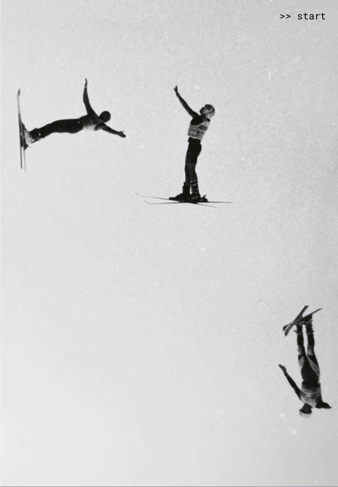
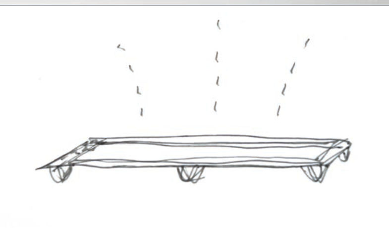
Tips till formella ledare som vill möjliggöra transformation
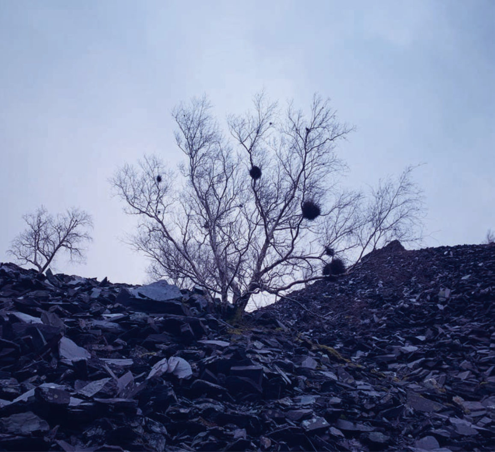
Vi samäger ett hus, och en av oss – Bodil en trappa ner - har gröna fingrar och gör underverk med vår trädgård. Jag är raka motsatsen. Men under hennes ledning så bidrar jag där jag kan, vilket blir extra viktigt när hon har ont i axlarna. Jag gör en del grovarbete - köper jord, rensar ogräs, gödslar och vattnar – medan Bodil står för kreativitet, planering och allt det där nya. Ju mer jag lär mig, desto mer kan jag avlasta, och desto mer utrymme får Bodil att
utveckla trädgården.
Du som har en formell ledarroll eller befattning kanske inte aktivt driver och navigerar transformation - men du kan bidra genom att skapa en gynnsam växtmån för den utveckling som behöver ske - och för de pionjärer som driver den på olika sätt.
Man kan säga att du är trädgårdsmästarens assistent och möjliggörare – du har kanske inte hela den överblick som behövs i en transformation, men du kan jobba i organisationen med jordmånen och näring, för att skapa fruktbara förutsättningar både för komposterande och för framväxt av nya växtslag.
Använd din position för förändring
Du som har en formell ledarroll eller befattning som ger dig möjlighet att påverka, kan spela en viktig roll i att få transformation att hända. Man kan se det som att du gödslar jorden och skapar nya förutsättningar.
Du kan sprida näring och bereda plats på olika sätt:
- Uppåt, i förhållande till exempelvis övre ledarskikt, styrelse och regelverksskapare som har inflytande. Här kan du agera ambassadör och bidra till att upplysa, skapa transformationsmedvetenhet och sprida berättelser som kan katalysera förändring.
- Sidledes, som bland personer du möter i din ledningsgrupp eller inom nätverk du ingår i. Här kan du ta en liknande roll – som ambassadör eller spridare av berättelser. Du kan också med ditt paraplyperspektiv i organisationen identifiera synergier, eller initiativ att kroka arm med för att förstärka en riktning.
- Nedåt, i förhållande till medarbetare. Här har du möjlighet att skapa möjlighetsfickor för pionjärer och ta en skyddande roll genom att skapa mikroklimat för transformation. Genom att övriga medarbetare får ökad kunskap om transformation, kan de bli delaktiga på nya sätt när de ser hur deras gärning passar in i den större bilden.
Du kan också katalysera förändring genom ditt brobyggande mellan nivåer, till exempel genom att sprida insikter från dina medarbetare om hur organisationen egentligen fungerar, bortanför pappret. Medarbetare ser andra saker och gör andra kopplingar, och särskilt när de fått nya perspektiv kring transformation.
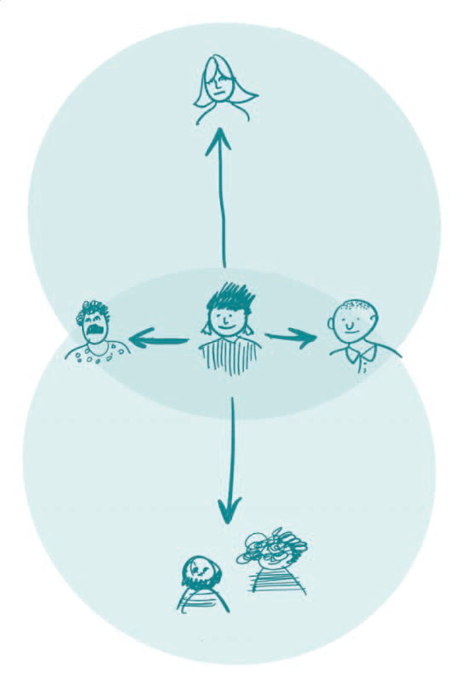
Observera att en person med en formell ledarroll kan mycket väl vara en pionjär. I det här delkapitlet fokuserar vi på det du kan göra utifrån ditt mandat och position i en organisation – vare sig du vill kalla dig för pionjär, eller någon som stöttar pionjärer.
Öppna, omfokusera och skärp blicken
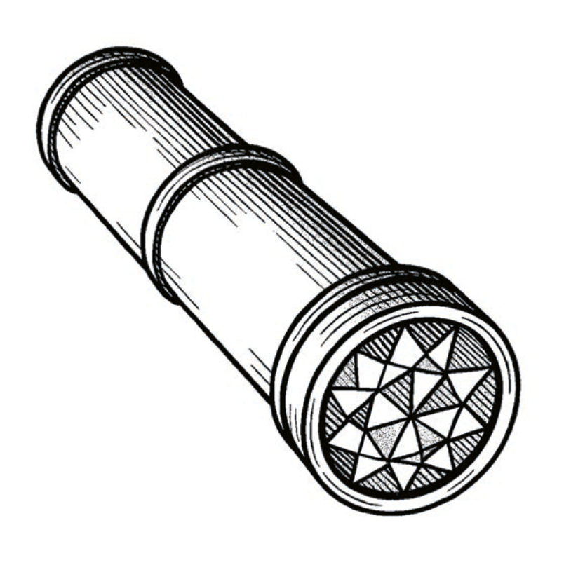
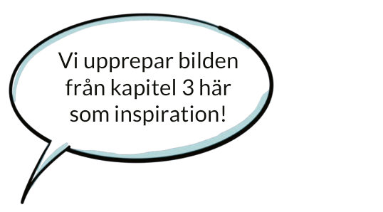
Organisationer som styrs som komplicerade system (scientific management)
Organisation
Ledarskap
Toppstyrd hierarki (reaktiv)
Effektivitet / Planera-kontrollera-mäta
Kortsiktigt perspektiv
Funktionsuppdelning / Homogena silos
Fast struktur / Byråkratisk styrning
Konkurrens
Makt utgår från toppen / centrum
Styrning
Universella lösningar
Formellt
Individfokus
Säkerställa tydlighet, stabilitet och förutsägbarhet
Medarbetare
Medarbetare som passiva produktionsenheter
Tydligt definierade arbetsbeskrivningar
Formell utbildning
Kognitiva färdigheter i fokus
Stämpla in och ut
Organisationer som styrs som komplexa system
Nedifrån-och-upp-emergens (experimenterande)
Relationer, mening, syfte och värdeskapande i fokus
Balanserar kortsiktigt och långsiktigt perspektiv
Multifunktionellt, holistiskt och integrerat
Adaptiv struktur med många perspektiv
Samarbete
Flera samverkande maktcentra
Möjliggörande snarare än styrande
Kontextsberoende
Informellt
Delat / kollektivt / distribuerat ledarskap
Omfamnar tvetydighet, osäkerhet och förändring
Medlemmar / samskapande partners
Flytande roller
Kontinuerligt lärande i arbetet
Människan som helhet i fokus
Syftesdrivet arbete
Tips för att arbeta strategiskt för transformation
Se gärna bilden på föregående sida om hur den logik som en organisation bygger på - helt avgör dess förmåga att hantera dagens
och framtidens utmaningar.
Exempel från praktiken
Exempel: Byt riktning – skapa handlingsutrymme
”Varför fokuserar vi så intuitivt på resursfrågan, när något nytt och svårt skall utföras? Varför är inte den självklara
utgångspunkten att vi alltid kommer göra nya och svåra grejer, helt oaktat hur förutsättningrna ser ut för att göra dem? Tänk om det var den organisatoriska reflexen, när utmaningar och möjligheter presenterar sig?
Förändring är ofta addering. Och när något adderas måste förutsättningarna utredas, analyseras, omförhandlas, planeras och justeras. Ett helt verksamhetsår kan gå åt till att byråkratisera nödvändiga ambitionshöjningar, utan att
att något ambitiöst alls har genomförts.
Vad skulle hända om vi istället prövade att göra direkt, lärde oss snabbt och justerade längst med vägen?
Exempel: En chef med ett nytt stort uppdrag i en myndighet valde att på det första ledningsgruppsmötet lägga en mycket tydlig riktning för hur man skulle jobba framåt.
”Det finns tre saker vi aldrig kommer att ta upp när vi ska samskapa som grupp och team: Resurser. Organisation. Mandat. Vi skall från och med nu istället fylla agendan med tre andra saker: kompetens, effekt och ansvar”.
Kompetens och effekt, är det som styr hur man ska ta sig an problemet. Sättet man gör det på, handlar om att ta ansvar. Men man tar inte ansvar genom att prata om resurser, mandat eller organisation. Dessa faktorer pratar man bara om i händelse av att de står vägen för att uppnå effekt.
Det här är ett tydligt sätt att skapa ett handlingsutrymme i övergången - tydliga och radikala spelregler som tvingar till kritiskt tänkande. Man blundar absolut inte för den befintliga verkligheten, men man pekar ut ett angreppsätt som skapar en positiv riktning, och som kan innehålla både gammalt och nytt.
Skapa möjlighetsfickor för medarbetare
Ledare spelar en central roll i att skapa utrymme och möjligheter för pionjärerna. Första linjens chefer som inser behovet av förändring och tror på sina medarbetares förmåga och riktning, kan försöka hitta sätt att möjliggöra detta inom organisationens ramar (se avsnittet om möjlighetsfickor i kapitel 6).
Ledare kan själva behöva vara kreativa för att skapa sådant utrymme genom att hitta ”hacks och workarounds”. Den här mekanismen skalar också uppåt i chefsleden.
Till viss del handlar det om att skapa mikro-klimat lokalt (se exempel på nästa sida), till viss del handlar det om att påverka organisationens kultur och strukturer utifrån den position man har.
Omsorg om dem som går i framkant Om de som har potential att driva eller på andra sätt bidrar till förändring går på knäna, är stressade och mår dåligt psykiskt, så sker ingenting. Det gäller att förstå vad i systemet och kontexten de verkar i, som får dem att må bra och inte.
Vad uttrycker de att de behöver för att kunna utföra sitt arbete? Hur svarar organisationen mot dessa behov? Vad behöver man göra för att skapa bättre förutsättningar? Hur kan man i chefsroll ”hacka systemet” när stora förändringar ligger långt bort?
Exempel från praktiken
Exempel: Mikroklimat för innovation och förändring
Christi Zuber är sjuksköterska, forskare, designer och förändringsledare. I början av 2000-talet grundade hon och ledde ett litet internt innovationsteam inom Kaiser Permanente, en av USA:s största non-profit vårdorganisationer med över 12 miljoner patienter.
Teamets mål var att bygga både individuell och organisatorisk innovationsförmåga, för att förbättra vården på sätt som gynnade både patienter och personal. Under 15 år bidrog man till att människocentrerad design (design thinking) långsamt spreds genom hela organisationen – från arbete med process-förbättring och individuell kompetensutveckling till nya informella och formella strukturer för innovation. När Christi reflekterade över vad som möjliggjorde denna förändringsresa, utvecklade hon begreppet "Innovation micro-climates" – små, skyddade miljöer där förändringsaktörer kan verka och experimentera utan att omedelbart möta motstånd från den större organisationen. Dessa mikroklimat gjorde det möjligt att testa nya idéer, bygga förtroende och att gradvis expandera innovationsarbetet till en bredare skala.
Christi berättar: "Det här är berättelser jag hör överallt, och det var också vår egen upplevelse. Det som oftast händer är att det finns någon förändringsagent som hittar en ”partner in crime”, någon som är lika engagerad som man själv. Tillsammans börjar man i liten skala, testar saker, förändrar saker och använder sina olika kompetenser.
I såna situationer började jag längs vägen prata om den typ av skydd som omger dessa personer. Dessa kan bli organisationens antikroppar om de får finansiering och tid. I vårt fall blev vi till exempel skyddade av vår närmaste chef, medan högre upp i organisationen var man inte alls lika medveten om vad vi gjorde. Och här ser vi kopplingen till metaforen om möjlighetsfickor och hur såna växer fram – vi kunde se hur ett mikroklimat skapade ett annat, och sedan ett till. Och till slut började kulturen förändras, men inte genom en traditionell, toppstyrd förändringsstrategi, utan genom människor och nätverk som tillsammans orsakade en större förflyttning. Det här hoppandet mellan fickor är en mycket mer emergent process än idén om att 'kultur förändras uppifrån och ner'."

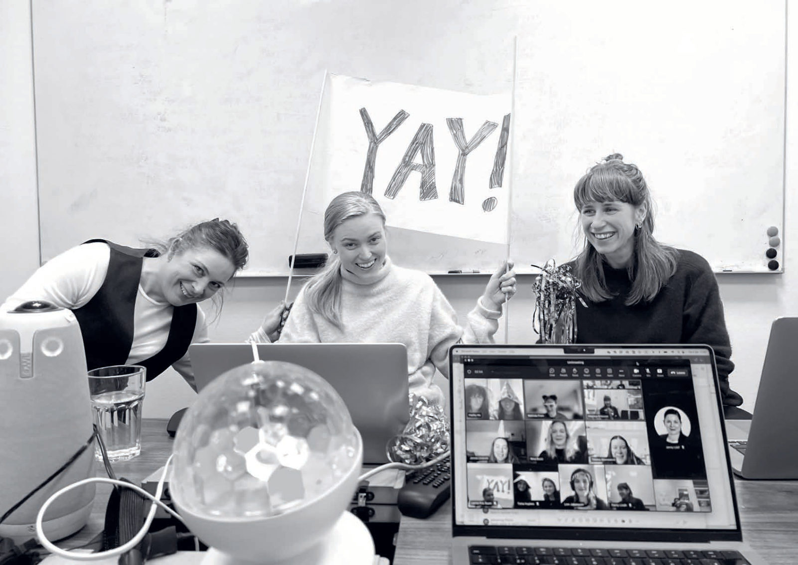
Möjlighetsfickor som metafor för emergent ledarskap
Virginia Hamilton (amerikansk expert på offentlig sektor och innovation) delar erfarenheter från US Department of Labor, och beskriver hur ledare kan vara skickliga på att identifiera och arbeta med möjlighetsfickor, eller skapa förutsättningar för att andra ska kunna göra det.
”Idén om möjlighetsfickor ligger nära hur jag ser på emergent ledarskap – och handlar om att uppmärksamma hur saker och ting växer fram och utvecklas, och sen arbeta med det. En skicklig ledare jag känner säger att han alltid har en lista med "tänk om"-scenarier: Tänk om detta skulle hända? Tänk om vi testar det här? Jag har själv en pågående lista med sådana saker, men ingen stor strategi eller masterplan. När något dyker upp krävs det att du är uppmärksam – på människor, finansiering eller policyförändringar. Då ser du små möjligheter, små sprickor där något kan ta form. Och det leder till något annat, som i sin tur leder vidare till ytterligare något mer.”
Exempel från praktiken
"För mig handlar transformativt ledarskap om att leda med autenticitet, sårbarhet och en förmåga att visualisera alternativa framtider. Det handlar om att våga vara en förebild,
skapa intellektuell stimulans och visa omtanke för människor."
"För det första handlar det om att ge plats för fantasi och kreativitet. För det andra måste vi omvärldsbevaka och bygga alternativa framtider snarare än att fastna i en enda vision. Och för det tredje behöver vi skapa forum för samtal som uppmuntrar till reflektion och förståelse för systemens
komplexitet."
"Jag tror att vi behöver mer fantasi och en stark känsla av angelägenhet för att skapa en bättre framtid. Transformativa ledare måste kunna inspirera, vara modiga och samtidigt skapa trygghet i en värld som är komplex och osäker."
Josephine Bladh, Konung Gustav V:s 90-årsfond
Konst som transformerande kraft i ledarskap Schibbolet-metoden
"Kärnan ligger i det estetiska, emotionella och etiska samspelet – jag kallar det 'estetmetik’, ett uttryck där fantasi, känsla och etik smälter samman. Tillsammans skapar dessa en möjlighet för verklig personlig och professionell transformation."
I en tid där ledarskap ofta definieras av effektivitet, struktur och mätbarhet, visar Julia Romanowska att verklig transformation sker genom konsten och kulturens djupgående kraft. Konst påverkar oss inte bara intellektuellt – den engagerar hela vårt psyke, våra känslor och vår etik. Den skapar en arena där vi kan ifrågasätta våra invanda sanningar, möta existentiella frågor och utveckla vårt omdöme på ett sätt som traditionella utbildningar inte förmår.
Vad gör konsten så kraftfull?
Konst öppnar upp för det okända – Genom att exponeras för komplexa, oväntade och ibland motsägelsefulla berättelser, tränas vår förmåga att hantera osäkerhet och se nya perspektiv.
Emotionell aktivering – Musik, litteratur och dramatik går förbi våra rationella filter och rör oss på en djupare nivå. Transformation sker när vi inte bara förstår något – utan även känner det.
Etiskt skärper konsten vår blick – Genom att konfronteras med svåra moraliska dilemman, empatisera med andras upplevelser och reflektera över vårt eget ansvar, blir vi mer medvetna om vår roll som ledare och människor. Romanowska bygger på denna insikt i sin forskningsbaserade utbildningsmetod, Schibbolet, som har förändrat hennes syn på ledarskapsutveckling. Forskningen genomfördes vid Karolinska Institutet.
Schibboletmetoden i korthet:
Ledare utsattes för en serie litterära och musikaliska föreställningar utan instruktioner eller teori. Efter varje före-ställning reflekterade de genom skrivande och samtal. Ingen traditionell pedagogik – ingen manual, inga modeller, inga enkla svar.
I studien jämfördes resultaten med en kontrollgrupp som genomgick en traditionell ledarskapsutbildning enligt Försvarshögskolans modell. Trots att kontrollgruppen fick en strukturerad och etablerad utbildning, visade resultaten att deras stressnivåer ökade och deras medarbetare upplevde dem som mindre ansvarstagande efter utbildningen. I kontrast uppvisade Schibbolet-gruppen lägre stress, ökad empati och stärkt ansvarstagande, vilket även bekräftades genom biologiska markörer och medarbetarnas utvärderingar.
Resultat från Schibboletgruppen:
- Minskad stress och ökad motståndskraft hos chefer och deras medarbetare.
- Högre empati och ansvarstagande – bekräftat både genom självskattning och biologiska markörer.
- Förändrad ledarstil – mer mod, ödmjukhet och förmåga att hantera komplexitet.
- Signifikant förbättrad arbetsmiljö – medarbetare upplevde sina chefer som mer närvarande och mänskliga.
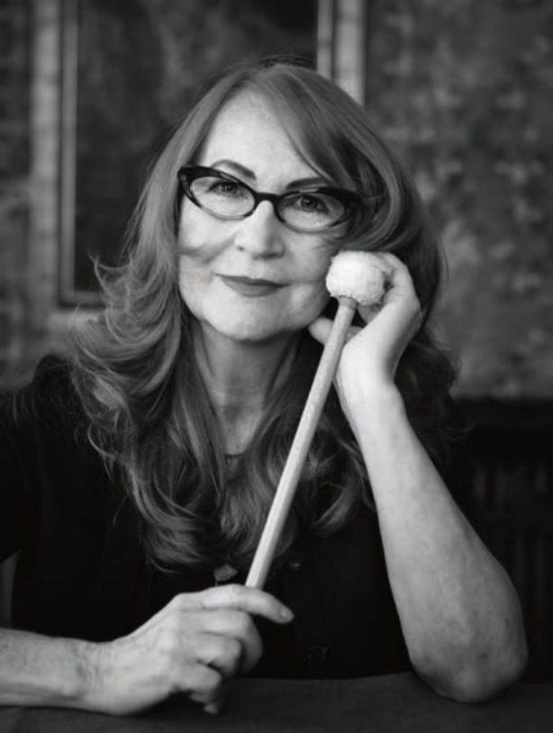
Mellanrummen där människor formar framtiden
Få ifrågasätter att man ska avsätta tid för att utveckla innovation, även om man inte vet vad nedlagd kraft och tid leder till. På samma sätt förhåller det sig med transformation. Om människor ständigt är för upptagna så sker ingenting. Och det man inte avsätter resurser till har svårt att överleva.
Tiden är alltid för knapp när alla befinner sig på marginalen. När vi har systemiska utmaningar så behöver vi ha med flera aktörer – det öppnar upp, blir kreativt, och man upptäcker dolda skav som innebär möjligheter. Samtidigt är det snarare regel än undantag att vara pressad i sin vardag. Vi vet att något magiskt uppstår när människor får möjlighet att samtala, men en process som vi hade velat lägga en dag på ska rymmas på två timmar, om ens det. Dessutom finns det en kraft i att ses i samma rum och att göra saker handgripligen tillsammans – något som försvåras ännu mer av de här proppfulla kalendrarna.
Samarbete över gränser är oundvikligt men kräver en insats. De flesta projekt vi gör är olika former av samarbetsprojekt där vi på olika sätt skapar en arena för samverkan mellan de deltagande parterna. Att fokusera på relationer och en följsam, inspirerande, provocerande process är något som tar tid.
Vem värnar om och lägger resurser på att hålla ett mellanrum vid liv? Oavsett hur mycket deltagare i samskapandeprojekt uppskattar de gemensamma sammanhangen, dialogen, lärandet som uppstår, och man pratar om hur man ska kunna hålla detta levande, så är det inte lika vanligt att någon tar taktpinnen när projekt avslutas, eller som är beredd att lägga resurser på att driva det vidare.
Att upprätthålla ett nätverk måste inte vara målet i sig – det som hände under projektbubblan kan få ringar på vattnet och oväntade fortsättningar långt utanför. Men vi ser ett behov av samlingspunkter och en viss grad av facilitering och insatser för att hålla platsen vid liv, och en fråga är hur detta kan bli något som fler vill satsa på.
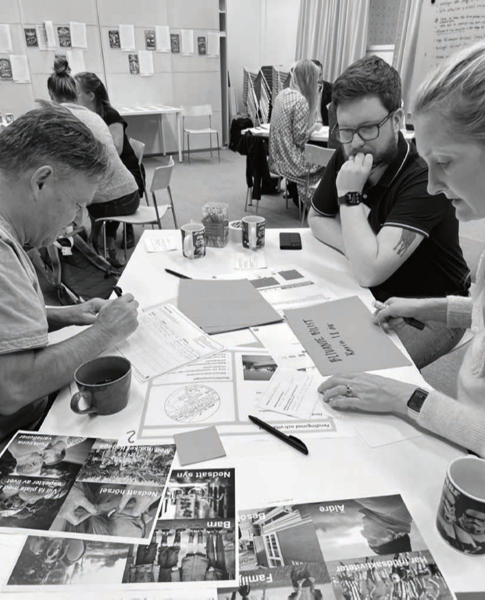
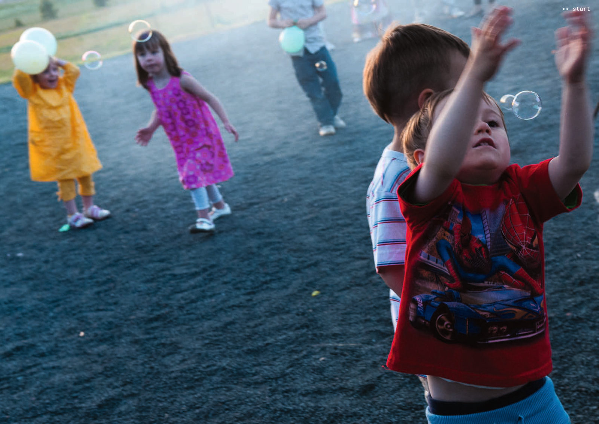